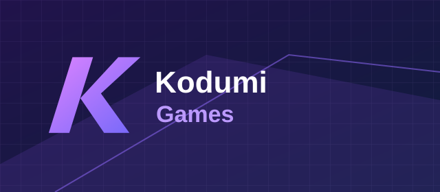

В разработке
Kodumi Games
Игровая веб-платформа с онлайн-матчами, профилями игроков и собственной экосистемой.
Подробнее о проектеСерверные приложения, API и работа в реальном времени.

Игровая веб-платформа с онлайн-матчами, профилями игроков и собственной экосистемой.
Подробнее о проекте